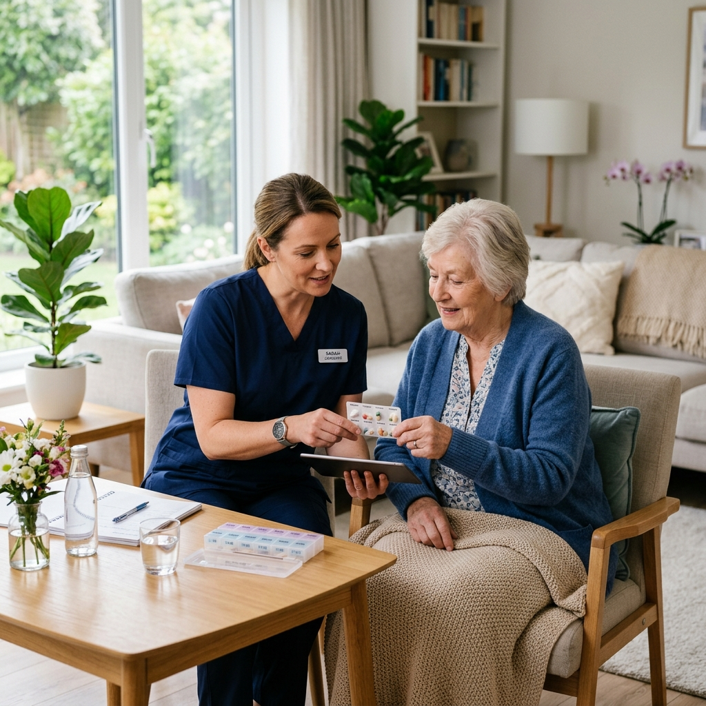
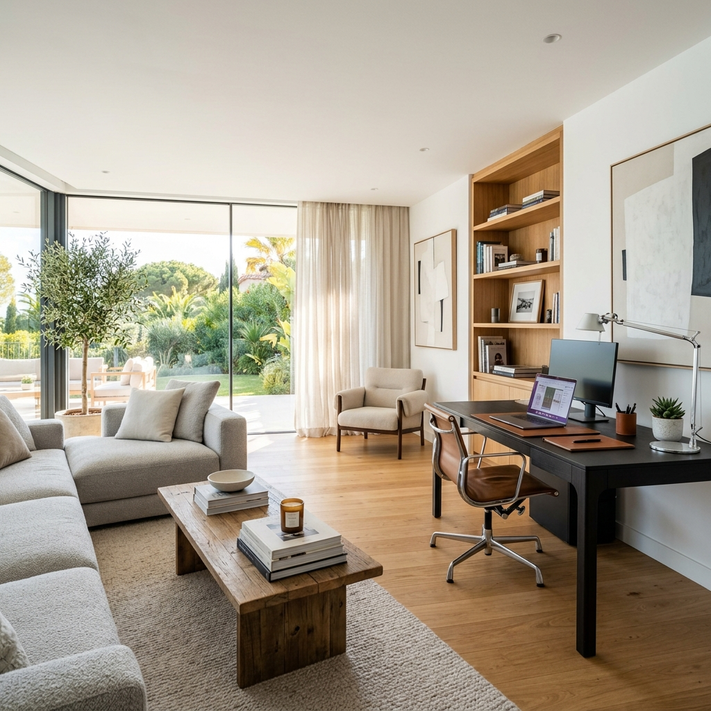

Evde Hasta Bakımı
Düzenli ilaç saat takibi, hastanın genel temizliği, kişisel hijyen desteği ve günlük bakım hizmetleri.
Evde bakım, yaşlı destek ve hijyen hizmetleri
Deneyimli ekiplerimiz hasta bakımı, refakat, günlük destek ve profesyonel temizlik ihtiyaçlarınıza hızlı ve özenli çözümler sunar.
Hizmetlerimiz

Düzenli ilaç saat takibi, hastanın genel temizliği, kişisel hijyen desteği ve günlük bakım hizmetleri.
Yalnız yaşayan büyükler için refakat, hareket desteği, beslenme takibi ve ev içi günlük destek.

Geniş kapsamlı ev, villa ve ofis temizliği. Periyodik temizlik, detaylı hijyen uygulamaları ve titiz çalışma.
Hastane ve ev ortamında güvenilir refakat, aileye düzenli bilgi aktarımı ve sakin destek.
Neden Deniz Bakım Temizlik?
Her aile ve her hasta farklıdır. Bu yüzden ekibimizi ihtiyaca göre yönlendirir, hizmet saatlerini netleştirir ve süreci düzenli takip ederiz.
Çalışma Süreci
Bakım, refakat veya temizlik talebinizi netleştiririz.
Uygun personel, gün, saat ve hizmet kapsamını belirleriz.
Süreç boyunca aileyle düzenli iletişim halinde kalırız.